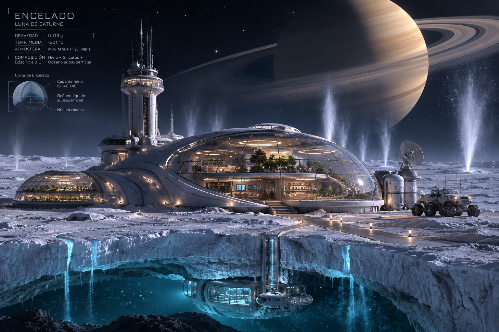
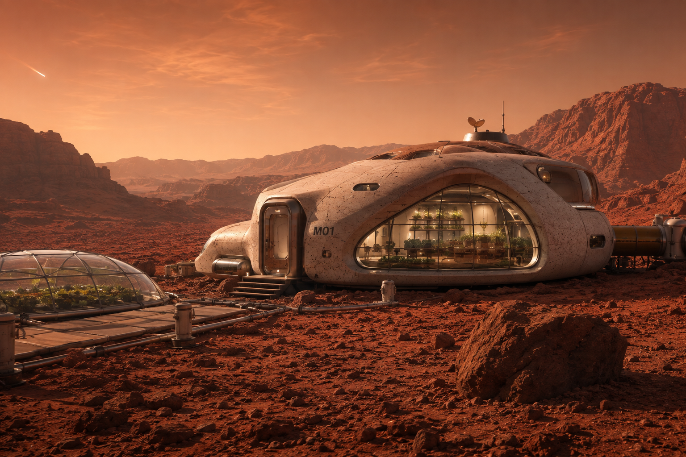

Casa en Encelado
Una vivienda lujosa en una de las muchas lunas de Saturno, con maravillosas vistas al planeta anillado
En Nuevos Mundos, nos dedicamos a crear posibilidades para que cualquier persona pueda vivir en otros planetas del sistema solar, sin abandonar las comodidades de su planeta natal.

Una vivienda lujosa en una de las muchas lunas de Saturno, con maravillosas vistas al planeta anillado

Una casa adaptada a las necesidades humanas para permitir de una forma adecuada la vida en el planeta rojo

Este alojamiento es ideal para la vida en el una vez hostil planeta conocido como "La gemela de la tierra"